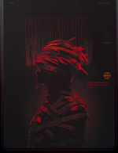
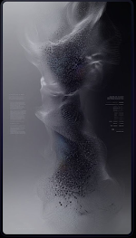

Transmission 01
The Metamorphosis
Transformation is rarely quiet. It is a violent shedding of the old self, a necessary destruction. In those moments you realize: the chrysalis is not a tomb, but an incubator for the profound.
Memory 02
Heavy is the head that wears the weight of expectation. Every decision is a fracture in the timeline, every silence a calculated move. We build empires in the void to prove we exist.


Archive 03
We are biological machines dreaming of infinite loops. The fusion of organic fragility and synthetic permanence. The future belongs to those who can navigate the space between code and consciousness.
99"The void is not empty; it is pregnant with possibility."
Q+"Design is the architecture of memory."
The stages of chrysalis, rendered as liquid light and structural friction.
The fragile first crease into the unknown. Embodying the chaos of raw potential.
Explore +Structure emerging from the void. Patterns recognized, systems reconstructed.
Explore +Masters of the medium. Fluid intuition where thought and action become one.
Explore +